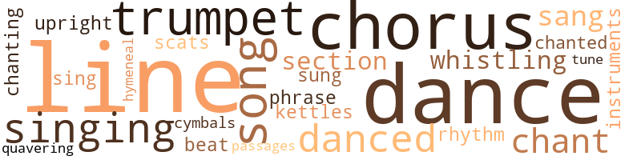
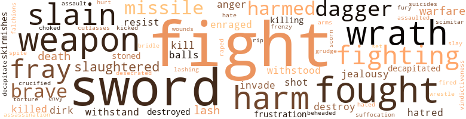
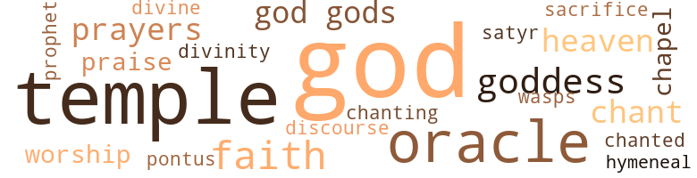

Athenian (The), by Harris, Elbert L. (1956)
60 music-related terms matched in this text.
Most frequent terms in this topic: trumpet (5); chorus (5); lines (4); danced (4); songs (4)
chant.n.01
Definition: a repetitive song in which as many syllables as necessary are assigned to a single tone
| word | sentence |
|---|---|
| chant | I played the flute as my guests sang a chant . |
| chants | Singing war chants , we marched at a brisk pace across the eight furlongs that separated us from our foes . |
chorus.n.01
Definition: any utterance produced simultaneously by a group
| word | sentence |
|---|---|
| chorus | In front of the seats were the orchestra , space for the chorus and the skene , or small building which represented the various scenes that took place in the play-house , facade or temple . |
| chorus | Preparation began months before the Great Dionysia and entailed the hiring of a choral director , buying brightly coloured chorus gowns for the all-male chorus , and listening day after day for hours on end to actors and chorus . |
| chorus | Preparation began months before the Great Dionysia and entailed the hiring of a choral director , buying brightly coloured chorus gowns for the all-male chorus , and listening day after day for hours on end to actors and chorus . |
| chorus | Preparation began months before the Great Dionysia and entailed the hiring of a choral director , buying brightly coloured chorus gowns for the all-male chorus , and listening day after day for hours on end to actors and chorus . |
| chorus | The cries of Decelea were muffled by the chorus of girls outside the door singing the epithalamion . |
cornet.n.01
Definition: a brass musical instrument with a brilliant tone; has a narrow tube and a flared bell and is played by means of valves
| word | sentence |
|---|---|
| trumpet | After the sacrifices to the gods , the trumpet sounded , dawn fled and we marched forth in pairs - destination Marathon . |
| trumpet | At the second sound of the trumpet , the wings are to wheel around and to hurl their strength at the enemy 's best - their center , where they usually place their finest troops . |
| trumpet | As the trumpet 's echoes reverberated o'er the hills , we bands of warriors prepared for a stand against the enemy 's hordes . |
| trumpet | Another trumpet sound and the two wings spun around and dashed their strength at the Persian 's best . |
| trumpet | I was the picture of dejection as the trumpet sounded for us to assemble again . |
cymbal.n.01
Definition: a percussion instrument consisting of a concave brass disk; makes a loud crashing sound when hit with a drumstick or when two are struck together
| word | sentence |
|---|---|
| cymbals | I heard the sound of cymbals , and shortly thereafter , Margelia , in the nude , pranced lithely into the room and began to dance . |
dance.n.01
Definition: an artistic form of nonverbal communication
| word | sentence |
|---|---|
| dance | One of them did a dance around fiery swords . |
| dances | Thousands loved the songs and dances . |
dance.n.02
Definition: a party of people assembled for dancing
| word | sentence |
|---|---|
| dance | I hired a Syracusan cook , and a dance team for entertainment . |
dance.v.03
Definition: skip, leap, or move up and down or sideways
| word | sentence |
|---|---|
| dance | " Fool , I mean can she sing or dance . " |
| dance | I heard the sound of cymbals , and shortly thereafter , Margelia , in the nude , pranced lithely into the room and began to dance . |
| danced | Margelia danced and left us limp on the wings of desire long after she had gone . |
| danced | In the midst of an alluvial , irrigated plain , rich in fertility , Susa sat , pounded by the gales of winter and the insufferable heat of summer , when drying barley danced to the tune of Helios . |
| danced | Behind the king in single file stood four attendants : the Lord Chamberlain , round-bearded and clad in a long purple robe , carried a fly-whisk and a white-spotted , blue embroidered napkin over the right arm and in his left hand a scented bottle ; the beardless , eunuch cupbearer also wore a purple robe , but winding under his chin in three folds and then over the head like a turban was a scarlet scarf , one end of which dropped to the middle of his back and the other behind the head and dropping to the nape of the neck : the carrier of the royal battle-ax and bow was clad in the headdress , trousers and coat of a Mede ; swung over his left shoulder was the royal bow case ; in his right hand was the bronze , double-edged ax ; from a belt at his right side hung the scabbard exquisitely adorned with a flap of lotus blossoms , a top with a pair of hawk-faced , lion-headed , and claw-legged griffins ; nine ibexes danced upon the shaft whose tip symbolized a bull 's head and the less clearly portrayed form of a lion ; the shaft was kept in place by a leather-braided strap that circumscribed the right knee ; the blade , of course , of this Scythian sword , was sheathed , but the hilt and a small portion of it were visible and showed an oval head with an indentured underside that provided for an excellent grip : lastly , clad in a purple robe was the carrier of the royal parasol , which was a gift from the Assyrians ; it was famous for its pomegranate top ; I never saw the king outside the palace without it . |
| danced | As she unfolded before me in the flickering light which danced across her form , I could see that here was a budding beauty . |
hymeneal.n.01
Definition: a wedding hymn
| word | sentence |
|---|---|
| hymeneal | Behind us came the torch-bearers and the rest of the procession - all singing the hymeneal song . |
kettle.n.04
Definition: a large hemispherical brass or copper percussion instrument with a drumhead that can be tuned by adjusting the tension on it
| word | sentence |
|---|---|
| kettles | Chariots and carriages - piled high with silver and kettles of gold . |
musical_instrument.n.01
Definition: any of various devices or contrivances that can be used to produce musical tones or sounds
| word | sentence |
|---|---|
| instruments | Their training began when they were five and emphasized punctuality , obedience to officers and elders , the art of self-restraint in consuming drink and food , rising early , running , javelin throwing , stone slinging , the use of the bow - in which they were superb marksmen , hunting , riding , jumping on and off a speeding horse with proficiency , standing up well under weather extremes , fording streams without damaging their weapons , how to support themselves in strange lands in the open country , how to live on a diet of acorns , wild pears and other fruits , how to thrive on one meal every two days , how to dig for roots , how to make the instruments of war , and how to make long marches . |
passage.n.06
Definition: a short section of a musical composition
| word | sentence |
|---|---|
| passages | All were asked to recite passages from the Iliad and Odyssey . |
phrase.n.02
Definition: a short musical passage
| word | sentence |
|---|---|
| phrase | The phrase " wooden wall " was not understood . |
rhythm.n.01
Definition: the basic rhythmic unit in a piece of music
| word | sentence |
|---|---|
| beat | The entire command was in the hands of Trierarch Athenius , but fortunately for him , the ship and the crew , the real operation was in the hands of experts : all marine matters were under the care of a master or pilot , Diplonides , who appointed the steersman , Cydernetes , and who cared for the Athena and governed the seamen ; Diplonides was an expert in navigation , having learned the art directly from the Phoenicians , in whose navy he had spent some years ; he brought his art back to Athens and taught many another Athenian the art of rudder control , sail management , wind observation , how to examine the heavens and to use the stars as guides , areas that were dangerous for rocks , reefs , shoals , areas that were good for harbors and also the significance of omens involving birds or fishes : he was assisted by a proreus , under-pilot , Claridus , who specifically was responsible for seating the rowers and taking care of the tackle : the purser , xenohpus , who was Celeystes , was commander of the rowers and also saw that they got their daily food supply : Marchides , the musician , or trierauges , was a flute player and it was to his melodious notes that the Athena 's rowers kept their oars at a steady beat : there were quartermasters who had the task of seeing that she suffered no damages by hitting rocks , reefs , or shoals : there were carpenters on board who repaired minor damages in order that she might not need to return to port : the steward handled the rationing of food to the crew : a logistes , or clerk , kept the accounts in order . |
rhythm.n.04
Definition: the arrangement of spoken words alternating stressed and unstressed elements
| word | sentence |
|---|---|
| rhythm | We splintered their oars - shipping our own on that side in a rhythm of movements that was wonderful to behold . |
scat.n.01
Definition: singing jazz; the singer substitutes nonsense syllables for the words of the song and tries to sound like a musical instrument
| word | sentence |
|---|---|
| scats | The chief carpenter , a pleasant , loquacious soul , gave me a lecture on the technicalities involved in the seating arrangement of the rowers : " If the scats and oar-holes of our rowers are not correctly positioned , they will be hitting each other in the head . |
section.n.01
Definition: a self-contained part of a larger composition (written or musical)
| word | sentence |
|---|---|
| section | The four best , that is those who could recite the most from each without missing a section , were selected . |
| section | " Here is the beginning of what is to be a Hall of One Hundred Columns ; here is another section of your main fortification wall ; its mud brick towers are thirty-six cubits square and are linked by a wall , twenty cubits in width and thirty-six in height . " |
sing.v.02
Definition: produce tones with the voice
| word | sentence |
|---|---|
| sang | I played the flute as my guests sang a chant . |
| sung | The lash sung out and snarled at the dust and the backs of men , for both men and animals crossed in mortal fear . |
| sing | " Fool , I mean can she sing or dance . " |
| sang | Again he finds his way back to Olympus to reward the gods with many fine mansions , as his anvil sang . |
| singing | Behind us came the torch-bearers and the rest of the procession - all singing the hymeneal song . |
singing.n.01
Definition: the act of singing vocal music
| word | sentence |
|---|---|
| singing | We rowed forth from Salamis ' shore singing and chanting our war songs . |
| singing | With helmets and shields glistening like jewels , with bronze tipped lances dipped for death , we felt our heart beats quicken as we swept across the plain , singing : " On , sons of Greeks ! |
| singing | The cries of Decelea were muffled by the chorus of girls outside the door singing the epithalamion . |
song.n.01
Definition: a short musical composition with words
| word | sentence |
|---|---|
| songs | This time Demaratus sat down in front of me and kept up a running stream of conversation about songs , women , Greeks and athletics . |
| songs | Thousands loved the songs and dances . |
| songs | We rowed forth from Salamis ' shore singing and chanting our war songs . |
| songs | " Go tell the people that we are here in obedience to our gods , our heroes , our ancestors , that we are here because of our tribes and immediate relatives , that this is the first hallowed ground from whence will ever spring all the songs of freedom , that freedom is Marathon and Marathon is freedom . |
| song | Behind us came the torch-bearers and the rest of the procession - all singing the hymeneal song . |
tone.v.01
Definition: utter monotonously and repetitively and rhythmically
| word | sentence |
|---|---|
| chant | Finally Diceaus said : " I swear by all the sacrifices that I am hearing the invocations that the Athenians chant on the Eleusinian procession on the eve of the celebration of the Mysteries . " |
| chanting | We rowed forth from Salamis ' shore singing and chanting our war songs . |
| chanted | I loved the market-place because so much of the world met here , for we were rapidly becoming a trading center of tremendous import ; I loved to browse through the stalls and wickerbooths of the sellers of figs , olive oil , vegetables , fish , charcoal , and flowers , and the shops of perfumers , wine-dealers , saddlers and shoemakers ; I loved its many odors ; I delighted in listening to the varied coloured merchants in the garbs of different lands as they chanted about their wares in thick-tongues , glib-tongues , unknown-tongues - until you quoted them a price , then they became surprisingly apt in understanding you , or in having you understand them ; this was especially true of the fishmongers whom Xanthippus called " fish-row-Democrats . " |
tune.n.01
Definition: a succession of notes forming a distinctive sequence
| word | sentence |
|---|---|
| line | They took the count of the men by placing a body of ten thousand together as solidly as possible and then drawing a line around them . |
| lines | Older Athenians argued that the goddess meant the citadel which was encircled by a wooden palisade ; others that the ships were the wooden walls , but they were confounded by the last two lines . |
| line | What an opportunity for the enemy which even a Persian admiral could see - the chance to cut through the Greek line and to devour us one by one - an opportunity to cover themselves with glory before the king . |
| lines | They retreated to reform their lines . |
| line | He could not see the Athenians for we were behind a line of hills ; therefore he pressed upon the Spartans and Tegeans . |
| lines | I am thinking about having one of the auletrides give her some lessons along those lines , so that should anything happen to me she will be able to take care of herself , so far she has enough talent for me . " |
| lines | Meanwhile Themistocles and Aristides had reformed their lines and had rejoined the fray . |
| tune | In the midst of an alluvial , irrigated plain , rich in fertility , Susa sat , pounded by the gales of winter and the insufferable heat of summer , when drying barley danced to the tune of Helios . |
upright.n.02
Definition: a piano with a vertical sounding board
| word | sentence |
|---|---|
| upright | The oarsmen in the hold were protected by the ship 's sides , for those in the uppermost wale , a gangway , or parodos , was added , and from its outer rim upright bulwarks shielded them from the enemy 's missiles . |
warble.v.01
Definition: sing or play with trills, alternating with the half note above or below
| word | sentence |
|---|---|
| quavering | With a quavering hand I pulled up the Amorgina . |
whistle.v.01
Definition: make whistling sounds
| word | sentence |
|---|---|
| whistling | ( Much applause and whistling . ) |
| whistling | They would show approval by hand-clapping , or disapproval by clacking their shoes against the seats and whistling . |
227 violence-related terms matched in this text.
Most frequent terms in this topic: fight (36); sword (16); fought (10); wrath (9); harm (8)
affray.n.02
Definition: a noisy fight
| word | sentence |
|---|---|
| fray | The men your messenger saw are simply making preparations for the coming fray . " |
| fray | Others had to be beaten into the fray by the captains wielding whips in their hands and were trampled to death by others about to die . |
| fray | Other groups in the barbarian camp seized their standards and came running to the fray without any semblance of order , so certain were they that victory was within their reach . |
| fray | Mardonius threw himself into the thick of the fray , surrounded by one thousand picked warriars - his bodyguard . |
| fray | The Athenians were held up by the Medising Greeks long enough to be kept from the main fray . |
| fray | " And as you can surmise , we sped to the fray full of enthusiasm . |
| fray | Meanwhile Themistocles and Aristides had reformed their lines and had rejoined the fray . |
anger.n.01
Definition: a strong emotion; a feeling that is oriented toward some real or supposed grievance
| word | sentence |
|---|---|
| anger | And as his anger mounted , he shouted : " I will have your heads . " |
| anger | This further served to anger Darius . |
assail.v.01
Definition: attack someone physically or emotionally
| word | sentence |
|---|---|
| assaulted | For twenty days we laid waste the countryside and assaulted Thebes ' walls which held . |
bridle.v.01
Definition: anger or take offense
| word | sentence |
|---|---|
| bridle | I know the Persian cavalry ; they require time to unshackle their horse , to bridle and to saddle them and for the men to equip themselves . |
brush.n.06
Definition: a minor short-term fight
| word | sentence |
|---|---|
| skirmishes | " Shall we not dispense with cavalry skirmishes and undertake an all out battle ? " |
| skirmishes | Perchance , he docs not intend to give us more than cavalry skirmishes . |
butcher.v.01
Definition: kill (animals) usually for food consumption
| word | sentence |
|---|---|
| slaughtered | The other animals would be slaughtered to help feed just such a banquet as this . |
| slaughtered | While the fires were being kindled and the animals slaughtered , Abronychus , Athenian scout , who had been stationed near Leonidas , brought us the tidings , by way of a triaconter , of the lost of the Hot Gates . |
| slaughtered | But in Thrace he suffered from very heavy losses ; the Thracians fell upon his army and slaughtered thousands ; hundreds more perished from hunger and thirst . |
| slaughtered | We poured through upon the enemy and slaughtered them like cornered sheep . |
character_assassination.n.01
Definition: an attack intended to ruin someone's reputation
| word | sentence |
|---|---|
| assassination | Everyone had been warned to keep his hands in his sleeves - a precaution taken to preclude the possibility of assassination . |
contemn.v.01
Definition: look down on with disdain
| word | sentence |
|---|---|
| scorn | Themistocles , hearing of the sudden turn of events , fled to Corcyra , which trembled when he arrived and promptly informed him that she was too small a state to bring down the hate of both Sparta and Athens upon her head ; therefore she transmitted him to Epirus , from which he fled to the house of Admetus , the Molossian king , who was his sworn enemy because previously he had rejected with bitter scorn a suggestion the king had made to the Athenian state . |
craze.n.02
Definition: state of violent mental agitation
| word | sentence |
|---|---|
| frenzy | Her blonde hair - which was most likely dyed because blondes were popular in Athens - flowed gracefully down to her hips and she occasionally whirled in a frenzy and shook her head as though to arouse it by a thousand winds . |
crucify.v.01
Definition: kill by nailing onto a cross
| word | sentence |
|---|---|
| crucified | " Darius had three thousand rebels of Babylonia crucified . " |
cutlas.n.01
Definition: a short heavy curved sword with one edge; formerly used by sailors
| word | sentence |
|---|---|
| cutlasses | " The Cabalians - Arms : Helmets , light targes of raw hide , cutlasses , javelins . |
dagger.n.01
Definition: a short knife with a pointed blade used for piercing or stabbing
| word | sentence |
|---|---|
| daggers | Arms : Lances , shields , daggers , and knotted iron clubs . |
| daggers | Equipment : bows and daggers . |
| daggers | On the right thigh , hanging from a girdle , are their daggers . |
| daggers | They dress like Greeks and carry daggers and falchions . |
| daggers | Those who still had swords used them ; those who had not made use of daggers , hands , and teeth . |
| dagger | This man has insulted us ; this man gained our confidence then played us for fools ; this man was enthroned in our hearts then hurled a dagger through it ; this man was thought by many to be a god then he behaved most ungodly ; this man had fame only a little less great than that of Callimachus then be became more infamous than Hippias . |
death.n.08
Definition: the act of killing
| word | sentence |
|---|---|
| death | " In consideration of these facts , I ask for the death penalty . " |
| death | But we must consider the fact that a vast majority of Athenian citizens are against our man and the Assembly knows it ; but I have been talking to many of the Assemblymen and they do not want a death penalty , though they want a penalty . |
| death | " Assemblymen , we of the defense wish to offer a counter proposal to the death penalty ; namely that in view of his great services previously to the city Miltiades be allowed to amend for the misdeed Athens feels that he has committed by the paying of a fine of fifty talents . " |
decapitate.v.01
Definition: cut the head of
| word | sentence |
|---|---|
| beheaded | Before the evenings shadows fell , these Phoenicians had been beheaded . |
| decapitated | Rumors flew among them like a decapitated chicken . |
| decapitated | I would say one thing more - we should take this chance to deter the barbarian from committing an atrocity like the one he committed at the Hot Gates when he ordered that the body of Leonidas be decapitated ; therefore we should decapitate the body of Mardonius . " |
| decapitate | I would say one thing more - we should take this chance to deter the barbarian from committing an atrocity like the one he committed at the Hot Gates when he ordered that the body of Leonidas be decapitated ; therefore we should decapitate the body of Mardonius . " |
defy.v.01
Definition: resist or confront with resistance
| word | sentence |
|---|---|
| withstand | How do you suppose the Ionian Greeks are going to be able to withstand the might of the Persian Empire ? " |
| withstood | He can not be withstood by the courage of bulls nor lions , Strive as he may ; he is mighty as Jove ; there is nought that shall stay him , Till he has got for his prey your king , or your glorious city . " |
| withstand | How can they withstand an army like ours . " |
| withstood | All the next day we withstood more cavalry attacks . |
desecrate.v.01
Definition: violate the sacred character of a place or language
| word | sentence |
|---|---|
| desecrated | ' Down with him , for he has desecrated the temple of the hero of Protcsilaus - the first to fall in the Trojan War , from a spear thrust in the hands of Hector . ' ' |
destroy.v.04
Definition: put (an animal) to death
| word | sentence |
|---|---|
| destroy | Since lire and impetuous Ares , speeding along in a Syrian chariot , hastes to destroy her . |
| destroyed | As I passed through them , I came upon a dark-eyed beauty with golden tresses ; her name was Armelia , daughter of a Macedonian , whose family had been destroyed save for herself ; it seemed that he was a Macedonian who had been against the Persians . |
| destroy | " Look at that hair that flows in the limpid grace of a water fountain ; look at those eyes that are so sad now , but some of you will remember them as being bright as an olive-lit brazier ; look at that nose , as sharply defined as Mount Lycabettus ; look at those lips that can be as sweet as honey , and destroy them if you can . |
| destroyed | ' Pay or be destroyed ' was the charge he flung at them . |
dirk.n.01
Definition: a relatively long dagger with a straight blade
| word | sentence |
|---|---|
| dirks | Arms : Javelins , light targes and short dirks . |
| dirk | Equipment : plaited-lassoes which they throw out and whatever the noose entwines , they draw back to them where the victim , man or beast , is slain with a dirk . |
enrage.v.01
Definition: put into a rage; make violently angry
| word | sentence |
|---|---|
| enraged | Captain Ademantus of the Corinthians was enraged at Themistocles ' conduct and remarked to him rather acidly : " Let me remind you that they who start too soon at the Olympic races are scourged . " |
| enraged | The presumptuousness of this woman in coming thousands of stadia to fight Greeks enraged us no end ; therefore we all kept one eye alerted for the vessel bearing her standard . |
envy.n.01
Definition: a feeling of grudging admiration and desire to have something that is possessed by another
| word | sentence |
|---|---|
| envy | Because of their own jealousy and envy , they came to no decision . |
falchion.n.01
Definition: a short broad slightly convex medieval sword with a sharp point
| word | sentence |
|---|---|
| falchions | They dress like Greeks and carry daggers and falchions . |
fight.n.02
Definition: the act of fighting; any contest or struggle
| word | sentence |
|---|---|
| fighting | The rest of the Greeks in the city were captured after some fierce fighting . |
| fighting | There was also our superior techniques of fighting . |
| fighting | We rarely used light armed troops in the critical moments of any battle ; it was the heavy armed men who did the most important fighting ; the lightly armed were used in the last part of the battle when the enemy was already in flight . |
fight.n.05
Definition: a boxing or wrestling match
| word | sentence |
|---|---|
| fight | Inhabited by barbarians who are unwarlike and fight in turbans , trousers and with bows and arrows and little spears . |
| fight | If the Medes darken the sun with their arrows , we shall have our fight in the shade . " |
| fight | Speaking to me later about these inscriptions , Themistocles said , " I have two ideas in mind : we may be able to persuade the Ionians to either leave or fight unenthusiastically ; or seeing these inscriptions , Xerxes hmiself might grow suspicious of the Ionians and withdraw them from his fleet for fear of them . |
| fight | Themistocles continued again : " I say that if you leave here , you will have no fight in which we have a chance of success . |
| fight | We prepared to renew the fight - but the enemy was not in sight . |
| fight | We knew Xerxes was still in Athens , and our spies reported that he was making feverish preparations which we interpreted as meaning that he intended to continue the fight , somewhere on land - perhaps an attack against Sparta . |
| fight | Queen Artemisia , your advice on the sea fight was the best . |
| fight | Well , for the first time , we shall be separated in our fight for freedom . |
| fight | The Phliasians , coming forward in disorder , so enthused were they at the prospect of getting back into the fight , were espied by Asopodorus , a Theban captain in command of a squadron of cavalry . |
| fight | A rumor flew through the ranks to the effect that you had won your fight at Plataea . |
fight.v.02
Definition: fight against or resist strongly
| word | sentence |
|---|---|
| fighting | Themistocles cleared up the whole matter by explaining that the Athenians would be saved by men fighting on board ships and that Salamis would become a great bay - the place where Athens would be saved . |
| fight | He sincerely hoped that they would not fight , for he was not one to take lives needlessly , but he could not tolerate impudence . |
| fought | Xerxes was completely baffled , for the Greeks had fought his forces to a standstill . |
| fight | The Thespians elected to fight it out , as did the Thebans ; the majority of the council was in favor of no such view , but wanted to retreat ; they were correct in arguing that the pass was now absolutely indefensible . |
| fight | Turning to Demaratus , he said : " What is it that makes men fight and die like this ? " |
| fight | " I told you that they would fight like this , Great King . " |
| fight | " And they will fight like these ? " |
| fight | The Persians when they learned of our presence were anxious to fight ; fearful lest we flee before they could get at us , they planned a trap that would render escape impossible : they sent two hundred ships round by the islands of Sciathos and passed by the Caphareus and Geraestus , hoping to reach our rear and to close the only possible escape route . |
| fight | Said Themistocles : " Let us await the evening and then venture out to test the enemy 's prowess and maneuverability ; unless we are forced to fight before that time by whatever may be left of his fleet coming around the island ; otherwise , let us wait , because we need a trial run with the foe ; if the situation gets too bad for us , darkness will save us . " |
| fighting | By evening the fighting stopped and each side returned to its own anchoring grounds . |
| fight | This was the plan that Themistocles had spoken about : " Men of Ionia , you do wrong to fight against your fathers , and to give your help to enslave Greece . |
| fight | If neither of these things be possible , and you are hindered , by a force too strong to resist , from venturing upon desertion , at least when we come to blows fight backwardly , remembering that you are sprung from us , and that it was through you we first provoked the hatred of the barbarian . " |
| fought | The Thebans fought only as long as was necessary ; then with their hands raised like suppliants , they approached the Persians , who , suspicious of their conduct , slew several in the front ranks before Xerxes saw them and ordered them to be received . |
| fought | The Thebans complained that they had fought against their will and informed the king that they had sent him tokens of earth and water ; Xerxes acknowledged them as friends . |
| fights | A messenger was dispatched to Histiaea with instructions that he was to call together the men and to give them the following information : " Warriors , the Great King , gives permission to all who wish to leave the port and come see how he fights the senseless men who try to defeat his armies . " |
| fight | Some of these took to the citadel where they hoped to be able to turn back the enemy ; others merely remained to fight it out . |
| fight | We must fight here . |
| fight | I can not understand why they fight so hard for a land that seems to consist of mountains , hills , rocks , muddy and sluggish rivers that do not even furnish drinking water which they must get from wells , cisterns and springs . |
| fighting | There seems to be little here that is worth fighting for , especially against the Great King . |
| fight | " Admiral Themistocles it was never meant that the fleet should fight here ; we came here only as a covering operation for the evacuation of Athens and to help carry some of the citizens to safety . " |
| fight | " But our best strategy is to remain here and fight because we have the advantage . |
| fight | " I have always said and I say it again that this is our place to fight , " chirped in Captain Xanthippus . |
| fight | " That owl , " said Admiral , " is a good omen , sent by Athena herself ; let us stand and fight here . |
| fight | We will remain worthy of these things only to the extent that we are willing to fight and to die for them . |
| fighting | In short the enemy had no strategy for fighting in such close quarters . |
| fight | The presumptuousness of this woman in coming thousands of stadia to fight Greeks enraged us no end ; therefore we all kept one eye alerted for the vessel bearing her standard . |
| fought | " Fools , " said the king , " the Ionians fought well . |
| fight | Xerxes ' treatment of the Phoenicians had been so harsh that that night they fled homeward - a loss that was a grave blow to the Persians , should they desire to fight again . |
| fight | He regrets that his former message did not work well for you because the Greeks decided to stand and fight . |
| fight | They agreed to let the Milesians defend themselves as best they might , that no attempt be made to fight on land , that the best defense would be made on the sea , that Lade - a little island not far from Miletus - should be chosen as the place for the naval force to assemble . |
| fight | " Lastly , you might suggest to your government when you go back that we should fight the enemy in Bocotia . " |
| fight | Why do n't you come down onto the plain and fight ? " |
| fight | He was getting smarter , for without a water supply , we must either fight or retreat . |
| fought | The barbarians fought nobly and bravely ; again and again they fell upon the Greeks , only to die . |
| fought | They fled to their fortress , but we followed so close on their heels that they could make little use of it ; some fought to the death , but most just kept on running . |
| fought | " Just as Hegesistratus had predicted , the Ionians revolted and fought along with us . |
| fought | His body narrowly escaped being thrown into the Kaeadas , a ravine that received the bodies of common criminals , but his friends fought against so horrible an end for a man who had been once so great . |
| fight | The prytany ( a committee of ten of the Council of Five Hundred ) , of which Xanthippus was at this time a member , submitted several plans ; the Assembly liked best the one of Cleonitus , who urged us to look to our arms ; every man old and young enough to carry a shield should fight ; messengers should be sent to other cities asking for their help ; every effort should be made to propitiate the gods with sacrifices and prayers ; the younger men should take to the field to meet the enemy , while the older ones and those less able to get around should remain at home and provide a second line of defense . |
| fight | " We must fight here , where we have a wonderful opportunity like thunder from Zeus to destroy the enemy - an enemy who has reduced terrifically his own mobile power , so that his advantages in numbers need no longer give us fear . |
| fought | Here they fought furiously to escape , and succeeded , for we were able to destroy only seven at immense losses to ourselves . |
| fought | Brave Polemarch Callimachus fell from an axe-blow that cut off his hand ; others slain were Generals Stesilaus and Kynegeirus , brother of the dramatist , Aeschylus , who had himself fought bravely . |
frustration.n.03
Definition: a feeling of annoyance at being hindered or criticized
| word | sentence |
|---|---|
| frustration | Eyes that were once full of passionate fire were now sunken in delusion , frustration and confusion . |
| frustration | " And do not forget , " added Xanthippus , " that at nineteen we spent two years in garrison duty on the frontier , which I considered two years of frustration . " |
fury.n.01
Definition: a feeling of intense anger
| word | sentence |
|---|---|
| fury | The fury of our attack sent the barbarians reeling . |
gag.v.06
Definition: cause to retch or choke
| word | sentence |
|---|---|
| choked | I was in for a tumultous time when I lifted the goblet for a drink ... I almost choked and then spewed up . |
grudge.n.01
Definition: a resentment strong enough to justify retaliation
| word | sentence |
|---|---|
| grudge | The truth , we learned later , was that he was showing his vindictiveness against a Parian citizen by the name of Lysagoras , who had offended him some years before , but he had no right to make a personal grudge a matter of attack on all citizens . |
harm.v.01
Definition: cause or do harm to
| word | sentence |
|---|---|
| harmed | Let them know that you are not to be harmed , that if you are my wrath will remember that when I arrive in the city . |
| harmed | Have you harmed her ? " |
| harmed | " Have we harmed her ? |
| harm | It became a sacrilege to harm a Plataean , who was henceforth exempt from military duty . |
| harm | We had no public prosecutor , the state was dependent on its own citizens to help keep it free from those who would harm it . |
| harmed | The truth is no one has proven that she had harmed our fair land . |
| harm | I rose to defend the old fox : " There has been no concrete evidence offered that he has done anything to harm the state . |
| harmed | " I can not see that he has harmed Athens enough for that . " |
hate.n.01
Definition: the emotion of intense dislike; a feeling of dislike so strong that it demands action
| word | sentence |
|---|---|
| hatred | When I asked Xerxes the reason for the Persian nobleman 's hatred of trade , he replied : " A trader is a liar ; the buyer only compounds the lie . " |
| hatred | If neither of these things be possible , and you are hindered , by a force too strong to resist , from venturing upon desertion , at least when we come to blows fight backwardly , remembering that you are sprung from us , and that it was through you we first provoked the hatred of the barbarian . " |
| hate | Themistocles , hearing of the sudden turn of events , fled to Corcyra , which trembled when he arrived and promptly informed him that she was too small a state to bring down the hate of both Sparta and Athens upon her head ; therefore she transmitted him to Epirus , from which he fled to the house of Admetus , the Molossian king , who was his sworn enemy because previously he had rejected with bitter scorn a suggestion the king had made to the Athenian state . |
hate.v.01
Definition: dislike intensely; feel antipathy or aversion towards
| word | sentence |
|---|---|
| hated | How we hated having missed them . |
injury.n.01
Definition: any physical damage to the body caused by violence or accident or fracture etc.
| word | sentence |
|---|---|
| harm | In maneuvering we had two standard tactics - the diekploys and the perikloys ; the former involved bearing down upon the enemy full speed then shipping your oars on the side of your vessels nearest the enemy , so that you could smash his with no harm to your own ; the latter involved circling him until the propitious moment came for crushing into his sides with your beak . |
| harm | Certainly there is no harm in trying . |
| harm | It can not be ignored that these charges wrought us great harm . |
| harm | I say again that it has not been proven here , either in the deposi - tion or by the prosecution that actual overt harm has been done . |
| harm | At last on Persian soil , he was conducted by Persian guides to Susa , where he wrote the following letter to King Artaxerxes : " I , Themistocles , am come to you , who did your house more harm than any other Hellene , when I was compelled to defend myself against your father 's invasion - harm , however , far surpassed by the good that I did him during his retreat , which brought no danger for me but much for him . |
invade.v.01
Definition: march aggressively into another's territory by military force for the purposes of conquest and occupation
| word | sentence |
|---|---|
| invade | Finally the Great King told me what my future was going to be : " Athenius , I think you can be of great use to us , especially since we plan to invade your ex-city . |
| invade | When the report was ready , again I stood in the Theatre of Dionysus and looked out to the thousands of faces rising before me like waves of the sea and began the story of the coming invader : " At the dawn of a day in Susa , four years ago , Xerxes raised a sceptered-hand and commanded the legions from many lands to make ready to invade Greece . |
jealousy.n.01
Definition: a feeling of jealous envy (especially of a rival)
| word | sentence |
|---|---|
| jealousy | Because of their own jealousy and envy , they came to no decision . |
| jealousy | This action aroused the jealousy of two of our former allies - the Spartans and the Aeginetans , who began to fear our new found strength , for they were not too sure against whom it might be directed . |
kick_back.v.02
Definition: spring back, as from a forceful thrust
| word | sentence |
|---|---|
| kicked | Discipline in our army had less rigidity than that of the Spartans ; but no Athenian on the field dared become insubordinate because it could lead to his being kicked out or imprisoned - either of which for a free citizen would be a calamity ; however a soldier so condemned could have his case reviewed by a prytany . |
kill.v.10
Definition: cause the death of, without intention
| word | sentence |
|---|---|
| killed | " In the Ionian affair , " said Mardonius , " we killed some , transplanted others , then finally set up commonwealths within the Empire , which gave the radicals less to talk about . |
| kill | He then told us to kill some of the flocks and herds that the Euboeans were gathering at that moment and have a feast . " |
| killed | Many of her men were killed ; the others were made slaves or eunuchs . |
| kill | I visualize yet greater blooms upon the tree , greater than you or I have ever known ; and we must not let the ill wind from the barbaric land kill the buds with its killing frost . |
| killing | An Egyptian nobleman pleaded for lighter taxes for his people ; a Babylonian made a similar plea ; a contractor pleaded for his life from a satrap 's decision that had condemned him to death for having put up a building that had collapsed , killing twenty persons . |
killing.n.02
Definition: the act of terminating a life
| word | sentence |
|---|---|
| killing | I visualize yet greater blooms upon the tree , greater than you or I have ever known ; and we must not let the ill wind from the barbaric land kill the buds with its killing frost . |
malice.n.01
Definition: feeling a need to see others suffer
| word | sentence |
|---|---|
| spite | Let me remind you that in spite of the deeply appreciated assistance of Poseidon , the enemy still outnumbers us at least three to one ; we can not overcome such numbers on the open sea . |
murder.v.01
Definition: kill intentionally and with premeditation
| word | sentence |
|---|---|
| slain | Equipment : plaited-lassoes which they throw out and whatever the noose entwines , they draw back to them where the victim , man or beast , is slain with a dirk . |
| slain | Bodies of the slain and pieces of ships were sent careening against the oars of the enemy at Aphetae , causing him no end of worry and anguish , for he could not forget Mount Pelion . |
| slain | They saw their one thousand slain and marveled for our losses at Thermopylae , including the two thousand helots , were approximately three thousand . |
| slain | Good tidings came from the islet of Psyttaleia , where Aristies with a number of Zeugitai - heavy-armed troops - won a great victory over the Persians stationed there ; they were slain to the last man . |
| slay | To light with such wretches is like trying to slay a lion with a broken javelin . |
| slain | Histiaeus later fell into the hands of the Persians , and was slain in Sardis on orders of Artaphernes . |
| slain | Oeobazus was captured and slain in Thrace by the tribes of area . |
| slain | Brave Polemarch Callimachus fell from an axe-blow that cut off his hand ; others slain were Generals Stesilaus and Kynegeirus , brother of the dramatist , Aeschylus , who had himself fought bravely . |
musket_ball.n.01
Definition: a solid projectile that is shot by a musket
| word | sentence |
|---|---|
| balls | Soon there was a resounding crash ; men were hurled from decks ; rowers like balls were bounced from their seats as a Calyndian galley with King Damasithymus on board , struck broadside , carried its screaming wreckage to silence beneath the bloody , briny deep . |
| balls | The throne was a high-backed golden chair at the foot of which was a silver footstool with feet like the hoofs of a bull ; the feet of the chair ended in lions paws that were sustained by silver balls ; on each side of it was a silver incense burner , cone-shaped , standing on a corrugated stand with indentures through which poured the exhilarating frankincense fumes from Arabia . |
open_fire.v.01
Definition: start firing a weapon
| word | sentence |
|---|---|
| fired | I was never able to ascertain any correct figure ; one reported 700,000 ; another 800,000 ; another 1,700,000 , which became the official figure ; the secretary who reported a number of 200,000 was promptly fired on the grounds that he could not count and was , therefore , unfit for his post . |
pain.v.02
Definition: cause emotional anguish or make miserable
| word | sentence |
|---|---|
| hurt | The fall of Ionia deeply hurt us because death had stepped in like a scythe and cut down the members of families far away . |
projectile.n.01
Definition: a weapon that is forcibly thrown or projected at a targets but is not self-propelled
| word | sentence |
|---|---|
| missiles | The oarsmen in the hold were protected by the ship 's sides , for those in the uppermost wale , a gangway , or parodos , was added , and from its outer rim upright bulwarks shielded them from the enemy 's missiles . |
| missile | Finally , the enemy unleashed a torrent of missile weapons and ground them to death . |
| missile | Our archers made excellent use of their missile weapons and cleared deck after deck . |
| missile | They shot missile weapons into the Gargaphia , which was stopped up , thereby ruining the water supply for the Spartans . |
| missiles | The rest of us used the Asopus , but the enemy soon made that impossible by the use of his missiles . |
rape.n.03
Definition: the crime of forcing a woman to submit to sexual intercourse against her will
| word | sentence |
|---|---|
| assault | Thus you could have a simultaneous assault . . . front and rear . " |
rape.v.01
Definition: force (someone) to have sex against their will
| word | sentence |
|---|---|
| raped | Pluto stole and raped Persephone and caused her mother , Demeter , much sorrow and anguish . |
resist.v.04
Definition: withstand the force of something
| word | sentence |
|---|---|
| resist | How Themistocles contrived to resist this trend , I shall shortly relate . |
| resist | Finally , they sent a message to Commander Pausanias : " We can not , brothers-in-arms , continue to resist the Persian horse in the post which we have occupied if we are left without succours . |
rip.v.04
Definition: criticize or abuse strongly and violently
| word | sentence |
|---|---|
| rip | ' Silence , you despicable wretch , before the gods rip out your tongue . ' |
scimitar.n.01
Definition: a curved oriental saber; the edge is on the convex side of the blade
| word | sentence |
|---|---|
| scimitar | A sword or scimitar had struck him down . |
shoot.v.02
Definition: kill by firing a missile
| word | sentence |
|---|---|
| shot | " And let me remind you , " shot back Themistocles , " that they who start too late remain uncrowned . " |
| shot | They shot missile weapons into the Gargaphia , which was stopped up , thereby ruining the water supply for the Spartans . |
sic.v.01
Definition: urge to attack someone
| word | sentence |
|---|---|
| set | One of the silver ones I kept for myself ; the other was inscribed to the sacred memory of Pasiclus and set upon the hearth , where it was kept shining , but otherwise untouched . |
stone.v.01
Definition: kill by throwing stones at
| word | sentence |
|---|---|
| stoned | And on the spot where the western end of Xerxes ' bridge had stood , a huge plank was driven into the ground ; they nailed him to it and left him to starve to death , but not before they had brought his young son and stoned him to death under the parent 's eyes . ' " |
| stoned | I saw actors stoned off the stage ; others who had offended less had figs hurled at them ; they gathered these and thanked the audience for its kind consideration . |
suffocation.n.01
Definition: killing by depriving of oxygen
| word | sentence |
|---|---|
| suffocation | There were little boys clutching puppies - to the point where the poor things narrowly escaped suffocation . |
suicide.n.01
Definition: the act of killing yourself
| word | sentence |
|---|---|
| Suicides | Suicides were not uncommon . |
sword.n.01
Definition: a cutting or thrusting weapon that has a long metal blade and a hilt with a hand guard
| word | sentence |
|---|---|
| swords | One of them did a dance around fiery swords . |
| swords | " The Colchians - Arms : Wooden helmets , raw hide shields , short spears , swords . |
| sword | They carry light raw hide target which are similar to shields , two javelins and a sword . |
| sword | Then he threw into the Hellespont as gifts , the golden goblet , bowl and a short sword called the acinaces . |
| swords | As their spears became useless , the Greeks turned to their swords which they used like scythes . |
| swords | Those who still had swords used them ; those who had not made use of daggers , hands , and teeth . |
| sword | Eurytus , upon hearing of the traitorous action , immediately called for his shield and sword , and returned to the field and died . |
| sword | The barbarians stormed the citadel and put the rest of the defenders to the sword and the temple to the flames , though they first robbed the temple of its treasures . |
| sword | Were it not for the gravity of the situation before us , my sword would silence your wretched tongue . |
| sword | The captain of the Eretrians came forth as if to speak and had barely gotten his mouth open when Themistocles , like a sword piercing his breast , silenced him with the words : " What have we here ! |
| sword | What , have you too , something to say about war - you are like a fish , though you have a sword , you always turn tail in sight of an enemy , especially if he happens to be larger than you . " |
| swords | Remember every stroke of your swords today will be in defense of the noble . |
| swords | " And now , " said Admiral Eurybiades , " let us return to our ships , praise the gods , make our sacrifices ; and may the foe be like chaff to our swords . " |
| sword | Sometimes we boarded them and cleared the same with the sword and the lance . |
| sword | Pausanias ended the thought with the statement : " The evils of the father should not be visited upon the heads of the children ; I shall not have their blood on any sword of mine . " |
| sword | The order was obeyed and she was being taken to his bed one night while he was asleep , when , suddenly awaking and not taking time to discern who it was , he seized his sword and slew her on the spot . |
| sword | A bronze , single-edged sword , encased in a leather scabbard , dangled from my left side ; the scabbard was attached to a strap that circled my right shoulder ; some of the men carried double-edged swords made of iron ; some scabbards were of wood and others of leather . |
| swords | A bronze , single-edged sword , encased in a leather scabbard , dangled from my left side ; the scabbard was attached to a strap that circled my right shoulder ; some of the men carried double-edged swords made of iron ; some scabbards were of wood and others of leather . |
| swords | Again and again , our swords disemboweled them , or they were impaled upon our lances like wild boars . |
| sword | Once I slipped and before I could get my shield into position , a Persian sword was at the point of slashing my legs when it suddenly fell to the ground . |
| sword | I saw standing over me the smiling Pasiclus , whose sword was as red as his lips . |
| sword | A sword or scimitar had struck him down . |
| sword | A small sword , sheathed in precious stone , was latched to a golden girdle . |
| sword | Behind the king in single file stood four attendants : the Lord Chamberlain , round-bearded and clad in a long purple robe , carried a fly-whisk and a white-spotted , blue embroidered napkin over the right arm and in his left hand a scented bottle ; the beardless , eunuch cupbearer also wore a purple robe , but winding under his chin in three folds and then over the head like a turban was a scarlet scarf , one end of which dropped to the middle of his back and the other behind the head and dropping to the nape of the neck : the carrier of the royal battle-ax and bow was clad in the headdress , trousers and coat of a Mede ; swung over his left shoulder was the royal bow case ; in his right hand was the bronze , double-edged ax ; from a belt at his right side hung the scabbard exquisitely adorned with a flap of lotus blossoms , a top with a pair of hawk-faced , lion-headed , and claw-legged griffins ; nine ibexes danced upon the shaft whose tip symbolized a bull 's head and the less clearly portrayed form of a lion ; the shaft was kept in place by a leather-braided strap that circumscribed the right knee ; the blade , of course , of this Scythian sword , was sheathed , but the hilt and a small portion of it were visible and showed an oval head with an indentured underside that provided for an excellent grip : lastly , clad in a purple robe was the carrier of the royal parasol , which was a gift from the Assyrians ; it was famous for its pomegranate top ; I never saw the king outside the palace without it . |
torment.v.01
Definition: torment emotionally or mentally
| word | sentence |
|---|---|
| torture | " You know that we could use torture to get the answer . " |
vindictiveness.n.01
Definition: a malevolent desire for revenge
| word | sentence |
|---|---|
| vindictiveness | The truth , we learned later , was that he was showing his vindictiveness against a Parian citizen by the name of Lysagoras , who had offended him some years before , but he had no right to make a personal grudge a matter of attack on all citizens . |
war.n.03
Definition: an active struggle between competing entities
| word | sentence |
|---|---|
| warfare | Sire , the initiative is ours ; in warfare that is a matter of tremendous import . |
| warfare | Aristagoras , who had taken no part in the previous warfare , became more and more concerned . |
| warfare | The Spartans and the Tegeans pursued the enemy to the enclosure but they were held at bay because they were not too well-versed in the art of siege warfare . |
weapon.n.01
Definition: any instrument or instrumentality used in fighting or hunting
| word | sentence |
|---|---|
| weapons | Their training began when they were five and emphasized punctuality , obedience to officers and elders , the art of self-restraint in consuming drink and food , rising early , running , javelin throwing , stone slinging , the use of the bow - in which they were superb marksmen , hunting , riding , jumping on and off a speeding horse with proficiency , standing up well under weather extremes , fording streams without damaging their weapons , how to support themselves in strange lands in the open country , how to live on a diet of acorns , wild pears and other fruits , how to thrive on one meal every two days , how to dig for roots , how to make the instruments of war , and how to make long marches . |
| arms | Mount Athos , off the Hellespont , is not content with striding into the hands of Uranus , but also links arms with Poseidon ; it forms a small strip of land one parasang in width , at the southern end of which , gentle Elea throws a beautiful lap from the Acanthian Sea to Torone , where sits little Sane - the point where the Persians drew a line to mark the spot for the digging of a canal , so that their vessels might have passage from Asia to Europe . |
| weapons | Finally , the enemy unleashed a torrent of missile weapons and ground them to death . |
| weapons | Our archers made excellent use of their missile weapons and cleared deck after deck . |
| weapons | They shot missile weapons into the Gargaphia , which was stopped up , thereby ruining the water supply for the Spartans . |
| weapon | Mardonius was using his best weapon . |
| weapons | And looking like Ares ' men - a transformation which was too much for my little girl , for she fled from the room - we , Pasiclus and I , took leave of the household , followed by two slaves who carried our weapons and knapsacks . |
| weapons | Our military movements were relatively simple ; wheeling to the right , wheeling to the left ; placing a small group in front of the main army was protaxis - such as using archers to start a battle with their missive weapons which was called protaxis psilon . |
| weapons | " Or , " I said , continuing , " to be eighteen and an epheboi again , when for two years we drilled together , studied rhetoric , learned the use of weapons , dined together and learned how to become Assemblymen , magistrates , judges , lawmakers and generals . " |
| weapons | The commander read a most informative report ( for me ) , for it dealt with the number of weapons in the armouries under their command . |
weather.v.01
Definition: face and withstand with courage
| word | sentence |
|---|---|
| brave | When Mardonius heard that the Greeks had gone , he called to him Thorax of Darissa , a Thessalonian , and said to him : " What say you now of your brave Greeks , for they have fled in the night . |
| brave | And among them your brave Spartans . |
| brave | The Persians made ramparts of their wicker shields and poured arrows upon the Greeks , who lost several brave men . |
| brave | When they passed out the honors for the brave , they decided that others who did not leave the ranks were just as brave as he had been . |
| brave | Maybe I wanted to show my influence on you mere males who are supposed to be so brave and mighty . |
whip.v.04
Definition: strike as if by whipping
| word | sentence |
|---|---|
| lash | The lash came down till life was washed away . |
| lashing | Orders came back that the Hellespont was to be scourged by lashing and the engineers put to death . |
| lash | The work proceeded with new speed - inspired by the lash and Xerxes ' wrath . |
| lash | The lash sung out and snarled at the dust and the backs of men , for both men and animals crossed in mortal fear . |
wound.n.01
Definition: an injury to living tissue (especially an injury involving a cut or break in the skin)
| word | sentence |
|---|---|
| wounds | Like a warrior whose wounds have healed , Athens sprang back to her gay self again but not for long because another blight struck her - this time from one of her own , Miltiades , who came to the Assembly one day and stepping upon the bema , spoke a request : " Athenian friends , I would ask that you grant me an armament of seventy ships and as many men as they might carry . |
wrath.n.01
Definition: intense anger (usually on an epic scale)
| word | sentence |
|---|---|
| wrath | The work proceeded with new speed - inspired by the lash and Xerxes ' wrath . |
| wrath | Let them know that you are not to be harmed , that if you are my wrath will remember that when I arrive in the city . |
| wrath | For protection from the wrath of the elements , her exterior was coated with pitch . |
| wrath | Properly protected when off duty , the life expectancy of the Athena , if she escaped the wrath of the gods and the enemy , would be longer than my own - eighty years . |
| wrath | From him we learned that Poseidon had risen in wrath and smote the enemy , destroying four hundred of his number , while they were passing off Mount Pelion , that he had been able to recover much of their treasure for them and much for himself . |
| wrath | The Persians , fearing the wrath of Xerxes if they allowed so small a force to flaunt them , sailed forth to battle at noon without awaiting orders , shouting to themselves . |
| wrath | The wrath of the captains was great for they thought that this was another ruse . |
| wrath | Only about three thousand of their number survived our wrath . |
| wrath | For twenty-six days his wrath ran over like a flooding river . |
wrestle.v.01
Definition: combat to overcome an opposing tendency or force
| word | sentence |
|---|---|
| wrestle | " Ah , " said Cleonitus , " to be six again and to be back in school taking lessons in reading , writing , numbers and gymnastics ; or to be sixteen and to be taking physical exercises and to wrestle , to hunt , to swim , to drive the chariot . " |
129 religion-related terms matched in this text.
Most frequent terms in this topic: gods (50); temple (19); Oracle (11); temples (6); god (5)
chant.n.01
Definition: a repetitive song in which as many syllables as necessary are assigned to a single tone
| word | sentence |
|---|---|
| chant | I played the flute as my guests sang a chant . |
| chants | Singing war chants , we marched at a brisk pace across the eight furlongs that separated us from our foes . |
chapel.n.01
Definition: a place of worship that has its own altar
| word | sentence |
|---|---|
| Chapel | They were near the Chapel of Minerva Pronaia , when Zeus hurled a thunderbolt over their heads and another at Mount Parnassus , which spit off two crags and sent them crashing down upon them ; hundreds were smashed beneath their craggy brows ; the rest fled , terror-struck . |
| chapel | " He has even erected a private chapel near his own home ; thereby indicating that our own temples are not good enough for him . |
deity.n.01
Definition: any supernatural being worshipped as controlling some part of the world or some aspect of life or who is the personification of a force
| word | sentence |
|---|---|
| divinity | Clad in gorgeous robes , reclining on a goldenlegged couch and drinking from a golden goblet the finest prepared wine created from the fame sun-charmed Chalybon grapes of the slopes of Damascus , Xerxes reminded me of a divinity ; these grapes were considered producers of what the king called " wine that could stimulate thirst in the throat of a god " ; the rest of us , being mere mortals , had to be content with the lower echelon vintages , while sitting on the red , white , black , blue pavement . |
divine.v.01
Definition: perceive intuitively or through some inexplicable perceptive powers
| word | sentence |
|---|---|
| divine | When the foe shall have taken whatever the limit of Cecrops , Hold within it , and all which divine Cithaeron shelters , Safe shall the wooden wall continue for thee and thy children . |
eden.n.01
Definition: any place of complete bliss and delight and peace
| word | sentence |
|---|---|
| heavens | The entire command was in the hands of Trierarch Athenius , but fortunately for him , the ship and the crew , the real operation was in the hands of experts : all marine matters were under the care of a master or pilot , Diplonides , who appointed the steersman , Cydernetes , and who cared for the Athena and governed the seamen ; Diplonides was an expert in navigation , having learned the art directly from the Phoenicians , in whose navy he had spent some years ; he brought his art back to Athens and taught many another Athenian the art of rudder control , sail management , wind observation , how to examine the heavens and to use the stars as guides , areas that were dangerous for rocks , reefs , shoals , areas that were good for harbors and also the significance of omens involving birds or fishes : he was assisted by a proreus , under-pilot , Claridus , who specifically was responsible for seating the rowers and taking care of the tackle : the purser , xenohpus , who was Celeystes , was commander of the rowers and also saw that they got their daily food supply : Marchides , the musician , or trierauges , was a flute player and it was to his melodious notes that the Athena 's rowers kept their oars at a steady beat : there were quartermasters who had the task of seeing that she suffered no damages by hitting rocks , reefs , or shoals : there were carpenters on board who repaired minor damages in order that she might not need to return to port : the steward handled the rationing of food to the crew : a logistes , or clerk , kept the accounts in order . |
| heavens | To the Phocians it seemed that arrows from every corner of the heavens were raining down upon them ; completely disconcerted , they fled to the top of the mountain and out of the way . |
| heaven | On the left side of the skene was a pulley with weights , called the mechane , which was used to lift down the gods , or heroes , from heaven , or to take them up again . |
god.n.03
Definition: a man of such superior qualities that he seems like a deity to other people
| word | sentence |
|---|---|
| gods | All triremes were supposed to be returned in as good a condition as when you had received them , with the exception of damages by the arts of the gods , or it was lost to the enemy ; damaged triremes had to be repaired at your own expense . |
| gods | Properly protected when off duty , the life expectancy of the Athena , if she escaped the wrath of the gods and the enemy , would be longer than my own - eighty years . |
| gods | As Helios rose in his golden glory , Xerxes took a golden goblet and poured from it a libation to the sea , taking care to keep his face toward the sun and praying all the while , urging the gods to cast their smile upon him and his forces , so that the sun might continue to smile upon them . |
| gods | I am sorry she did not enter our services sooner because she would have known all about your so-called tilt with the gods . |
| gods | Many the shrines of the gods he will give to fiery destruction . |
| gods | Here is the land of the Ionians , here the fertile soil and silver rich Lydia , here Phrygia - land of winding herds and full harvests , here the Cilians , who send in tribute five hundred talents to Susa , annually , here Armenia - land of flocks and herds , and here is Susa , upon the banks of the Choaspes , full of such astounding wealth that even the gods pause and wonder . |
| gods | " The gods be praised - a new discovery has been made ... a Spartan with wit . '' |
| gods | Next day we understood the fullness of the assistance of the gods and we made sacrifices to them . |
| gods | " Yes , I agree , but you know how much importance we attach to our festivals and celebrations to the gods . |
| gods | To those who were great believers in the gods , no explanation was necessary . |
| god | The wooden seats and stage eventually were replaced with stone , and the wooden seat of the god became marble . |
| gods | " The enemy has blockaded us ; it would take the gods to pry him loose . " |
| gods | " And now , " said Admiral Eurybiades , " let us return to our ships , praise the gods , make our sacrifices ; and may the foe be like chaff to our swords . " |
| Gods | Even the Temple of Cybele , Mother of the Gods , Ionic in style , constructed out of blocks of white marble of immense size , was put to the flames . |
| gods | Themistocles sent them a message : " Andrians , you had better pay the money because we have with us two of the most powerful of gods - Persuasion and Necessity . " |
| gods | The Andrians replied : " Athens is a great and glorious city , since she is fortunate to be blest with such powerful gods ; as for us , we are wretchedly poor , short of good land , and further cursed by the presence of two unprofitable gods - Poverty and Helplessness . |
| gods | The Andrians replied : " Athens is a great and glorious city , since she is fortunate to be blest with such powerful gods ; as for us , we are wretchedly poor , short of good land , and further cursed by the presence of two unprofitable gods - Poverty and Helplessness . |
| gods | We shall not pay the money , for your gods can not be any more powerful than our helplessness and inability . " |
| gods | Various gifts , called the first fruits , were given to the gods and sent to Delphi . |
| gods | Athens was happy again in her discussions , celebrations , festivities and honors to the gods . |
| gods | May the gods be with you . " |
| gods | To the Olympic gods - a seven cubit bronze Poseidon . |
| gods | ( We were able to have the above items made because of the immense value of the booty that had been set aside for these gods . ) |
| gods | On the left side of the skene was a pulley with weights , called the mechane , which was used to lift down the gods , or heroes , from heaven , or to take them up again . |
| gods | " As we marched to meet them , a most mysterious event happened ; something which none of us were able to explain ; some of the men claimed that they saw a messenger 's wand lying upon the beach ; others thought that they had heard a mysterious voice ; my faith in the gods is more entrenched than ever for how else can the matter be understood . |
| gods | There was no earthly way for this information to have reached us on the same day , save through the gods themselves . " |
| gods | " That is most interesting , but , as for me , I have never denied the influence of the oracles , the gods and the diviners on the course of history . " |
| god | Artayctes explained : ' Athenian stranger be not perturbed for that is nothing to fear ; it is simply a message to me from Protesilaus , who is telling me that though he has been dead for centuries and embalmed in salt , he still has the power of a god to destroy those who would dare trample his temple 's sacred precincts into dust . ' |
| gods | And should we fall - may the gods forbid it - I would miss these more , yes , than anything else , for the mind is the finest possession we Athenians have . |
| gods | ' Silence , you despicable wretch , before the gods rip out your tongue . ' |
| gods | " Well , praise be the gods , where did you find her ? " |
| gods | " We must look to our gods and our heroes who have given us much comfort over the years . |
| gods | I thought of a verse from Mimnermus : " We blossom like the leaves that come in spring , What time the sun begins to flame and glow , And in the brief span of youth 's gladdening Nor good nor evil from the gods we know , Holding , one grievous Age , one Death , within her hand . " |
| gods | In one of our last meetings together , I asked Xanthippus : " What do you think beat the Persians , aside from our own valor and what help we received from the gods ? " |
| gods | " Athens , my friends , has been blessed by the gods in climate and geography . |
| gods | The prytany ( a committee of ten of the Council of Five Hundred ) , of which Xanthippus was at this time a member , submitted several plans ; the Assembly liked best the one of Cleonitus , who urged us to look to our arms ; every man old and young enough to carry a shield should fight ; messengers should be sent to other cities asking for their help ; every effort should be made to propitiate the gods with sacrifices and prayers ; the younger men should take to the field to meet the enemy , while the older ones and those less able to get around should remain at home and provide a second line of defense . |
| gods | " May the gods be with you , " said my wife , somberly , as she and the two boys watched as we walked off into the breaking dawn which was cracking with the sounds of the armour of the carriers - all were going to the same place as we , the Agora , where we assembled . |
| gods | After the sacrifices to the gods , the trumpet sounded , dawn fled and we marched forth in pairs - destination Marathon . |
| gods | The gods willing victory will be ours . " |
| gods | We made our sacrifices the next morning ; our heralds offered the prayers to the gods in which the Plataeans were included and the divinations proving favorable , we made ready for battle . |
| gods | " Go tell the people that we are here in obedience to our gods , our heroes , our ancestors , that we are here because of our tribes and immediate relatives , that this is the first hallowed ground from whence will ever spring all the songs of freedom , that freedom is Marathon and Marathon is freedom . |
| gods | The sacrifices to the gods being given , the herald announced the business before us . |
| god | This man has insulted us ; this man gained our confidence then played us for fools ; this man was enthroned in our hearts then hurled a dagger through it ; this man was thought by many to be a god then he behaved most ungodly ; this man had fame only a little less great than that of Callimachus then be became more infamous than Hippias . |
| gods | " My fellow Athenians , I would speak with you of the gods . |
| god | Take Hephaestus whom we all know as the god of the forge . |
| gods | Again he finds his way back to Olympus to reward the gods with many fine mansions , as his anvil sang . |
| god | I would remind you that she told him , ' Crafty must he be , and knavish , who would outdo thee in all manner of guile , even if it were a god encountered thee . |
| gods | But come no more let us tell of these things , being both of us practiced in deceits , for that thou art of all men far the first in counsel and in discourse , and I in the company of all the gods win renown for my wit and guile . ' |
| gods | Yet we all love the gods and Odysseus is one of our most famous of heroes . |
| gods | " Think on these things , carefully , before you doom him , for if you choose the latter course it would seem that you are saying , ' The gods may err , but not Miltiades , saviour of Athens . ' |
| gods | Athenius , you have the key spot - Susa , where you are to go as an Athenian exile because you have denied the existence of the gods . |
| gods | " Then may the gods be with you . " |
| gods | " A matter of difference of opinion about the gods . " |
| gods | The recipe , he kept to himself , for when I inquired about it after the banquet , he spoke to me in a tongue which I had never heard before and one which I swear not even the gods could understand . |
| gods | In short you marry because the gods demand it , because we of the free-born must perpetuate ourselves or die ; because it is a sorry man who never wants a son ; because you will need someone to supervise your household such as the spinning , the handling of the slaves , the supervision of the nursery , for remember , you will be home very little ; the great majority of your life will be spent outside the home because you are a free-born male and time and time again you will find the city calling on you for countless civic duties . " |
| gods | When the time came , sacrifices and prayers to the gods were made in both homes . |
goddess.n.01
Definition: a female deity
| word | sentence |
|---|---|
| goddess | Older Athenians argued that the goddess meant the citadel which was encircled by a wooden palisade ; others that the ships were the wooden walls , but they were confounded by the last two lines . |
| goddess | In the midst of this confusion , born of desperation , one man stood out like a newly made shield - Themistocles , who really took charge of the evacuation ; he planted a story that the sacred serpent in the Temple of Athena had not eaten its cake for several days - indicating that the goddess wanted the city abandoned ; he capitalized on Cimon 's hanging his bridle up on the Acropolis - indicating that this warrior was going to take to the sea ; he had the baggage of all evacuees searched for money and treasures on the ground that the Gorgon 's head of the statue of Athena had been lost ; in short it was said that he was the man behind the evacuation . |
| goddess | None were forthcoming and finally , in despair , he looked up to the Heraeum of the Plataeans and prayed that goddess to come to the aid of the Greeks . |
| goddess | Near the temple of the goddess of the Brazen House , they met ; one of their number gave Pausanias a signal and he fled into the temple before the Ephors could lay hands on him ; temples in Sparta , as in Athens and all Greece , were sanctuaries , so he could not be seized while he was within its confines . |
hymeneal.n.01
Definition: a wedding hymn
| word | sentence |
|---|---|
| hymeneal | Behind us came the torch-bearers and the rest of the procession - all singing the hymeneal song . |
pontus.n.01
Definition: (Greek mythology) ancient personification of the sea; father of Nereus
| word | sentence |
|---|---|
| Pontus | " The Hellespontians ( From Pontus ) - one hundred . |
praise.n.02
Definition: offering words of homage as an act of worship
| word | sentence |
|---|---|
| praise | Said Pausanias : " Aeginetan , thank you for your words of praise , but your other expression comes from some evil demon . |
| praise | " Well , praise be the gods , where did you find her ? " |
prayer.n.01
Definition: the act of communicating with a deity (especially as a petition or in adoration or contrition or thanksgiving)
| word | sentence |
|---|---|
| prayers | The prytany ( a committee of ten of the Council of Five Hundred ) , of which Xanthippus was at this time a member , submitted several plans ; the Assembly liked best the one of Cleonitus , who urged us to look to our arms ; every man old and young enough to carry a shield should fight ; messengers should be sent to other cities asking for their help ; every effort should be made to propitiate the gods with sacrifices and prayers ; the younger men should take to the field to meet the enemy , while the older ones and those less able to get around should remain at home and provide a second line of defense . |
| prayers | We made our sacrifices the next morning ; our heralds offered the prayers to the gods in which the Plataeans were included and the divinations proving favorable , we made ready for battle . |
| prayers | When the time came , sacrifices and prayers to the gods were made in both homes . |
prophet.n.01
Definition: an authoritative person who divines the future
| word | sentence |
|---|---|
| Oracle | The Argives reported that they had already been told by the Oracle that they were beloved by the Immortals and to sit still and watch . |
| Oracle | The Cretans declined sending any aid because , as they told the envoys , they had contacted the Delphic Oracle for advice and were told that they were fools for having considered such a thought . |
| Oracle | Lastly , but by no means least , our own message from the Delphic Oracle was at first not at all pleasing : " Wretches , why sit ye here ? |
| Oracle | They were approached by a Delphian who told them to take an olive branch in hand and return again as suppliants and try the Oracle once more . |
| Oracle | And as he was preparing for his last stand , he probably thought of the message the Oracle had sent the Spartans on the eve of their departure : " O ye men who shall dwell in the streets of broad Lacedaemon ; Either your glorious town shall be sacked by the children of Peseus , Or , in exchange , must all through the whole Laconion country , Mourn for the loss of a king , descendant of great Heracles . |
| Oracle | The objective of this latter group was the treasures of the famed Delphic Oracle . |
| Oracle | The Delphians , hearing of their approach , were in great terror and consulted the Oracle to discover what they should do with the treasures ; the Oracle replied : " Leave my treasures untouched , O Delphians , for I am able to take care of my own . " |
| Oracle | The Delphians , hearing of their approach , were in great terror and consulted the Oracle to discover what they should do with the treasures ; the Oracle replied : " Leave my treasures untouched , O Delphians , for I am able to take care of my own . " |
| Oracle | The Oracle has said that our victory is to be won at Salamis . |
| oracles | Her riches were stolen ; her temples and oracles plundered . |
| Oracle | The apportionment of the spoils was as follows : To the Delphic Oracle - one tenth of the total , and a golden , three-headed tripod , inscribed with Pausanias ' inscription : " Pausanias , Grecia 's chief , the Mede 's o'erthrew , And gave Apollo that which here ye view . " |
| oracles | " That is most interesting , but , as for me , I have never denied the influence of the oracles , the gods and the diviners on the course of history . " |
| Oracle | This was done it was said at the demand of the Delphic Oracle , which denounced the entire affair as a defamation of the sanctuary and further demanded that two bodies be presented as atonement . |
prophet.n.02
Definition: someone who speaks by divine inspiration; someone who is an interpreter of the will of God
| word | sentence |
|---|---|
| Prophet | Sixty men and the Prophet were all that remained when the barbarians came marching within sight . |
religion.n.01
Definition: a strong belief in a supernatural power or powers that control human destiny
| word | sentence |
|---|---|
| faith | You have more than vindicated my faith in you . |
| faith | Be not seduced by the honeyed words of a barbarian , for surely you must know that with barbarians there is neither faith nor truth . " |
| faith | " As we marched to meet them , a most mysterious event happened ; something which none of us were able to explain ; some of the men claimed that they saw a messenger 's wand lying upon the beach ; others thought that they had heard a mysterious voice ; my faith in the gods is more entrenched than ever for how else can the matter be understood . |
| faith | The Spartan faith in him is shown by the fact that he was given command of an allied expedition against Cyprus and Byzantium , which caused his undoing . |
| faith | I will honor the ancestral faith . " |
sacrifice.v.04
Definition: make a sacrifice of; in religious rituals
| word | sentence |
|---|---|
| sacrifice | " My beloved Athenians give me your hearts , for I am about to ask that you sacrifice your bodies to the barbarians that the soul of Athens might live . |
satyr.n.02
Definition: one of a class of woodland deities; attendant on Bacchus; identified with Roman fauns
| word | sentence |
|---|---|
| satyr | " In more sober times the speech of Athenius would win an acquittal for a satyr . |
sermon.n.01
Definition: an address of a religious nature (usually delivered during a church service)
| word | sentence |
|---|---|
| discourse | But come no more let us tell of these things , being both of us practiced in deceits , for that thou art of all men far the first in counsel and in discourse , and I in the company of all the gods win renown for my wit and guile . ' |
temple.n.03
Definition: an edifice devoted to special or exalted purposes
| word | sentence |
|---|---|
| temple | The matter was next put before the Assembly , which declined to vote the necessary use of the temple treasures as a means of being able to build and to equip a navy . |
| temple | Get ye away from the temple ; and brood on the ills that await ye . " |
| temple | The temple of Apollo , after being pilfered of its treasures , was burned . |
| temple | The barbarians stormed the citadel and put the rest of the defenders to the sword and the temple to the flames , though they first robbed the temple of its treasures . |
| temple | The barbarians stormed the citadel and put the rest of the defenders to the sword and the temple to the flames , though they first robbed the temple of its treasures . |
| temple | The next day , several Athenian exiles , accompanied by Demaratus , went to the burned temple to offer sacrifices . |
| temple | In front of the seats were the orchestra , space for the chorus and the skene , or small building which represented the various scenes that took place in the play-house , facade or temple . |
| temples | He reminded us that he was very much around by sending to us , Alexander , the Macedonian , with the following message : " Men of Athens , the Great King has sent me a message saying that all the trespasses which the Athenians have committed against me I freely forgive , even Athenius , that they have all their territory restored , that they may choose whatever additional lands they wish and reside there unmolested , that they may rebuild their burned temples at Persian expense , and that I want them to join me in an alliance . |
| temples | Her riches were stolen ; her temples and oracles plundered . |
| temples | Every man , woman and child available worked long and hard on those walls which began to take defensive form - materials were taken from everywhere - houses , quarries , or temples . |
| temple | Artayctes explained : ' Athenian stranger be not perturbed for that is nothing to fear ; it is simply a message to me from Protesilaus , who is telling me that though he has been dead for centuries and embalmed in salt , he still has the power of a god to destroy those who would dare trample his temple 's sacred precincts into dust . ' |
| temple | ' Down with him , for he has desecrated the temple of the hero of Protcsilaus - the first to fall in the Trojan War , from a spear thrust in the hands of Hector . ' ' |
| temple | You beast who stole the sacred treasures of gold , silver , brass , and embroidered robes from the temple . ' |
| temple | ' And , ' shouted one of their leaders , ' this demon made of the sacred grove a pasture and a cornfield ; he put concubines in the temple . |
| temple | I will give one hundred talents for the damage I have caused to the temple and two hundred if you will only spare my life and that of my son . ' |
| temple | Near the temple of the goddess of the Brazen House , they met ; one of their number gave Pausanias a signal and he fled into the temple before the Ephors could lay hands on him ; temples in Sparta , as in Athens and all Greece , were sanctuaries , so he could not be seized while he was within its confines . |
| temple | Near the temple of the goddess of the Brazen House , they met ; one of their number gave Pausanias a signal and he fled into the temple before the Ephors could lay hands on him ; temples in Sparta , as in Athens and all Greece , were sanctuaries , so he could not be seized while he was within its confines . |
| temples | Near the temple of the goddess of the Brazen House , they met ; one of their number gave Pausanias a signal and he fled into the temple before the Ephors could lay hands on him ; temples in Sparta , as in Athens and all Greece , were sanctuaries , so he could not be seized while he was within its confines . |
| temple | The Spartans say that his mother was the first person to roll a rock against the temple gates , so upset was she by the treason of her son . |
| temple | The Spartans erected two brazen statues within the temple . |
| temples | " He has even erected a private chapel near his own home ; thereby indicating that our own temples are not good enough for him . |
| temple | " We must not forget our caves dedicated to the worship of Pan and Apollo , the sanctuary of Argaulos , the temple of Diocuri , or the temple of Athena ; or the shrines like the Holy Ones , Semnae , Amyros . |
| temple | " We must not forget our caves dedicated to the worship of Pan and Apollo , the sanctuary of Argaulos , the temple of Diocuri , or the temple of Athena ; or the shrines like the Holy Ones , Semnae , Amyros . |
| temples | Deserters were invariably put to death ; those guilty of cowardice or who had refused to serve were punished by being made to sit in women 's apparel in the forum ; they were never to wear garlands or to visit the temples ; they were also fined ; shield-loosers were fined , for this was considered an example of extreme carelessness - in Sparta it meant death . |
| temple | As he approached the sanctuary a deep fear seized him , for no male was supposed to enter this temple . |
tone.v.01
Definition: utter monotonously and repetitively and rhythmically
| word | sentence |
|---|---|
| chant | Finally Diceaus said : " I swear by all the sacrifices that I am hearing the invocations that the Athenians chant on the Eleusinian procession on the eve of the celebration of the Mysteries . " |
| chanting | We rowed forth from Salamis ' shore singing and chanting our war songs . |
| chanted | I loved the market-place because so much of the world met here , for we were rapidly becoming a trading center of tremendous import ; I loved to browse through the stalls and wickerbooths of the sellers of figs , olive oil , vegetables , fish , charcoal , and flowers , and the shops of perfumers , wine-dealers , saddlers and shoemakers ; I loved its many odors ; I delighted in listening to the varied coloured merchants in the garbs of different lands as they chanted about their wares in thick-tongues , glib-tongues , unknown-tongues - until you quoted them a price , then they became surprisingly apt in understanding you , or in having you understand them ; this was especially true of the fishmongers whom Xanthippus called " fish-row-Democrats . " |
wasp.n.01
Definition: a white person of Anglo-Saxon ancestry who belongs to a Protestant denomination
| word | sentence |
|---|---|
| wasps | We had the good sense to turn him down , but the Athenians heeded his request for aid which caused a multitude of hornets and wasps to come forth from many strange lands and they almost succeeded in stinging us to death . |
worship.n.01
Definition: the activity of worshipping
| word | sentence |
|---|---|
| worship | The fact that we may lose our ways of worship is another cause of grave concern . |
| worship | " We must not forget our caves dedicated to the worship of Pan and Apollo , the sanctuary of Argaulos , the temple of Diocuri , or the temple of Athena ; or the shrines like the Holy Ones , Semnae , Amyros . |